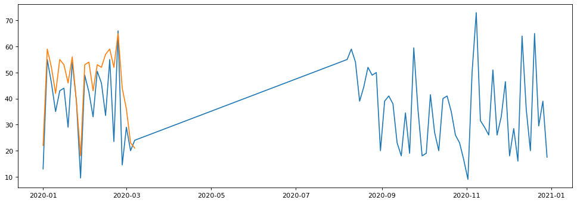

import pandas as pd
import pdb
import numpy as np
import matplotlib.pyplot as plt
pd.__version__
'2.3.2'
# read site listing data - https://aqs.epa.gov/aqsweb/airdata/download_files.html#AQI
sites = pd.read_csv('https://aqs.epa.gov/aqsweb/airdata/aqs_sites.zip')
sites.shape
(20952, 28)
sites.columns
Index(['State Code', 'County Code', 'Site Number', 'Latitude', 'Longitude',
'Datum', 'Elevation', 'Land Use', 'Location Setting',
'Site Established Date', 'Site Closed Date', 'Met Site State Code',
'Met Site County Code', 'Met Site Site Number', 'Met Site Type',
'Met Site Distance', 'Met Site Direction', 'GMT Offset',
'Owning Agency', 'Local Site Name', 'Address', 'Zip Code', 'State Name',
'County Name', 'City Name', 'CBSA Name', 'Tribe Name',
'Extraction Date'],
dtype='object')
sites.index
RangeIndex(start=0, stop=20952, step=1)
# use bitwise operators
# & for and
# | for or
sites.loc[sites['State Name'] == 'New York', ['State Code', 'County Code', 'Site Number', 'Location Setting', 'State Name', 'County Name', 'City Name']]
sites.loc[(sites['State Name'] == 'New York') & (sites['County Name'] == 'New York'), ['State Code', 'County Code', 'Site Number', 'Location Setting', 'State Name', 'County Name', 'City Name']]
| State Code | County Code | Site Number | Location Setting | State Name | County Name | City Name | |
|---|---|---|---|---|---|---|---|
| 12387 | 36 | 61 | 1 | URBAN AND CENTER CITY | New York | New York | New York |
| 12388 | 36 | 61 | 2 | URBAN AND CENTER CITY | New York | New York | New York |
| 12389 | 36 | 61 | 5 | URBAN AND CENTER CITY | New York | New York | New York |
| 12390 | 36 | 61 | 10 | URBAN AND CENTER CITY | New York | New York | New York |
| 12391 | 36 | 61 | 13 | URBAN AND CENTER CITY | New York | New York | New York |
| 12392 | 36 | 61 | 14 | URBAN AND CENTER CITY | New York | New York | New York |
| 12393 | 36 | 61 | 23 | URBAN AND CENTER CITY | New York | New York | New York |
| 12394 | 36 | 61 | 24 | URBAN AND CENTER CITY | New York | New York | New York |
| 12395 | 36 | 61 | 37 | URBAN AND CENTER CITY | New York | New York | New York |
| 12396 | 36 | 61 | 50 | URBAN AND CENTER CITY | New York | New York | New York |
| 12397 | 36 | 61 | 51 | URBAN AND CENTER CITY | New York | New York | New York |
| 12398 | 36 | 61 | 53 | URBAN AND CENTER CITY | New York | New York | New York |
| 12399 | 36 | 61 | 56 | URBAN AND CENTER CITY | New York | New York | New York |
| 12400 | 36 | 61 | 57 | URBAN AND CENTER CITY | New York | New York | New York |
| 12401 | 36 | 61 | 58 | URBAN AND CENTER CITY | New York | New York | New York |
| 12402 | 36 | 61 | 59 | URBAN AND CENTER CITY | New York | New York | New York |
| 12403 | 36 | 61 | 60 | URBAN AND CENTER CITY | New York | New York | New York |
| 12404 | 36 | 61 | 61 | URBAN AND CENTER CITY | New York | New York | New York |
| 12405 | 36 | 61 | 62 | URBAN AND CENTER CITY | New York | New York | New York |
| 12406 | 36 | 61 | 63 | URBAN AND CENTER CITY | New York | New York | New York |
| 12407 | 36 | 61 | 65 | SUBURBAN | New York | New York | New York |
| 12408 | 36 | 61 | 69 | URBAN AND CENTER CITY | New York | New York | New York |
| 12409 | 36 | 61 | 75 | SUBURBAN | New York | New York | New York |
| 12410 | 36 | 61 | 77 | URBAN AND CENTER CITY | New York | New York | New York |
| 12411 | 36 | 61 | 79 | URBAN AND CENTER CITY | New York | New York | New York |
| 12412 | 36 | 61 | 81 | URBAN AND CENTER CITY | New York | New York | New York |
| 12413 | 36 | 61 | 82 | URBAN AND CENTER CITY | New York | New York | New York |
| 12414 | 36 | 61 | 92 | URBAN AND CENTER CITY | New York | New York | New York |
| 12415 | 36 | 61 | 93 | URBAN AND CENTER CITY | New York | New York | New York |
| 12416 | 36 | 61 | 95 | URBAN AND CENTER CITY | New York | New York | New York |
| 12417 | 36 | 61 | 100 | URBAN AND CENTER CITY | New York | New York | New York |
| 12418 | 36 | 61 | 115 | URBAN AND CENTER CITY | New York | New York | New York |
| 12419 | 36 | 61 | 117 | URBAN AND CENTER CITY | New York | New York | New York |
| 12420 | 36 | 61 | 119 | URBAN AND CENTER CITY | New York | New York | New York |
| 12421 | 36 | 61 | 123 | URBAN AND CENTER CITY | New York | New York | Not in a city |
| 12422 | 36 | 61 | 125 | URBAN AND CENTER CITY | New York | New York | New York |
| 12423 | 36 | 61 | 126 | URBAN AND CENTER CITY | New York | New York | New York |
| 12424 | 36 | 61 | 127 | URBAN AND CENTER CITY | New York | New York | New York |
| 12425 | 36 | 61 | 128 | URBAN AND CENTER CITY | New York | New York | New York |
| 12426 | 36 | 61 | 130 | URBAN AND CENTER CITY | New York | New York | New York |
| 12427 | 36 | 61 | 134 | URBAN AND CENTER CITY | New York | New York | New York |
| 12428 | 36 | 61 | 135 | URBAN AND CENTER CITY | New York | New York | New York |
# use bitwise operators
# & for and
# | for or
sites.loc[sites['State Name'] == 'New York', ['State Code', 'County Code', 'Site Number', 'Location Setting', 'State Name', 'County Name', 'City Name']]
sites.loc[(sites['State Name'] == 'New York') & (sites['County Name'] == 'Queens'), ['State Code', 'County Code', 'Site Number', 'Location Setting', 'State Name', 'County Name', 'City Name']]
| State Code | County Code | Site Number | Location Setting | State Name | County Name | City Name | |
|---|---|---|---|---|---|---|---|
| 12556 | 36 | 81 | 4 | URBAN AND CENTER CITY | New York | Queens | New York |
| 12557 | 36 | 81 | 8 | SUBURBAN | New York | Queens | New York |
| 12558 | 36 | 81 | 15 | SUBURBAN | New York | Queens | New York |
| 12559 | 36 | 81 | 16 | SUBURBAN | New York | Queens | New York |
| 12560 | 36 | 81 | 20 | URBAN AND CENTER CITY | New York | Queens | New York |
| 12561 | 36 | 81 | 26 | URBAN AND CENTER CITY | New York | Queens | New York |
| 12562 | 36 | 81 | 29 | SUBURBAN | New York | Queens | New York |
| 12563 | 36 | 81 | 30 | SUBURBAN | New York | Queens | New York |
| 12564 | 36 | 81 | 40 | URBAN AND CENTER CITY | New York | Queens | New York |
| 12565 | 36 | 81 | 41 | URBAN AND CENTER CITY | New York | Queens | New York |
| 12566 | 36 | 81 | 42 | URBAN AND CENTER CITY | New York | Queens | New York |
| 12567 | 36 | 81 | 43 | URBAN AND CENTER CITY | New York | Queens | New York |
| 12568 | 36 | 81 | 44 | SUBURBAN | New York | Queens | New York |
| 12569 | 36 | 81 | 47 | SUBURBAN | New York | Queens | New York |
| 12570 | 36 | 81 | 54 | URBAN AND CENTER CITY | New York | Queens | New York |
| 12571 | 36 | 81 | 70 | URBAN AND CENTER CITY | New York | Queens | New York |
| 12572 | 36 | 81 | 84 | URBAN AND CENTER CITY | New York | Queens | New York |
| 12573 | 36 | 81 | 94 | URBAN AND CENTER CITY | New York | Queens | New York |
| 12574 | 36 | 81 | 96 | URBAN AND CENTER CITY | New York | Queens | New York |
| 12575 | 36 | 81 | 97 | URBAN AND CENTER CITY | New York | Queens | New York |
| 12576 | 36 | 81 | 98 | URBAN AND CENTER CITY | New York | Queens | New York |
| 12577 | 36 | 81 | 116 | URBAN AND CENTER CITY | New York | Queens | New York |
| 12578 | 36 | 81 | 120 | SUBURBAN | New York | Queens | New York |
| 12579 | 36 | 81 | 124 | URBAN AND CENTER CITY | New York | Queens | New York |
| 12580 | 36 | 81 | 125 | URBAN AND CENTER CITY | New York | Queens | New York |
pm25_daily_2020= pd.read_csv('https://aqs.epa.gov/aqsweb/airdata/daily_88101_2020.zip', parse_dates=['Date Local'])
#pm25_daily_2019= pd.read_csv('https://aqs.epa.gov/aqsweb/airdata/daily_88101_2019.zip', parse_dates=['Date Local'])
---------------------------------------------------------------------------
ValueError Traceback (most recent call last)
Cell In[8], line 1
----> 1 pm25_daily_2020= pd.read_csv('https://aqs.epa.gov/aqsweb/airdata/daily_88101_2020.zip', parse_dates=['Date Local'])
2 #pm25_daily_2019= pd.read_csv('https://aqs.epa.gov/aqsweb/airdata/daily_88101_2019.zip', parse_dates=['Date Local'])
File ~\miniforge3\envs\sds\Lib\site-packages\pandas\io\parsers\readers.py:1026, in read_csv(filepath_or_buffer, sep, delimiter, header, names, index_col, usecols, dtype, engine, converters, true_values, false_values, skipinitialspace, skiprows, skipfooter, nrows, na_values, keep_default_na, na_filter, verbose, skip_blank_lines, parse_dates, infer_datetime_format, keep_date_col, date_parser, date_format, dayfirst, cache_dates, iterator, chunksize, compression, thousands, decimal, lineterminator, quotechar, quoting, doublequote, escapechar, comment, encoding, encoding_errors, dialect, on_bad_lines, delim_whitespace, low_memory, memory_map, float_precision, storage_options, dtype_backend)
1013 kwds_defaults = _refine_defaults_read(
1014 dialect,
1015 delimiter,
(...) 1022 dtype_backend=dtype_backend,
1023 )
1024 kwds.update(kwds_defaults)
-> 1026 return _read(filepath_or_buffer, kwds)
File ~\miniforge3\envs\sds\Lib\site-packages\pandas\io\parsers\readers.py:620, in _read(filepath_or_buffer, kwds)
617 _validate_names(kwds.get("names", None))
619 # Create the parser.
--> 620 parser = TextFileReader(filepath_or_buffer, **kwds)
622 if chunksize or iterator:
623 return parser
File ~\miniforge3\envs\sds\Lib\site-packages\pandas\io\parsers\readers.py:1620, in TextFileReader.__init__(self, f, engine, **kwds)
1617 self.options["has_index_names"] = kwds["has_index_names"]
1619 self.handles: IOHandles | None = None
-> 1620 self._engine = self._make_engine(f, self.engine)
File ~\miniforge3\envs\sds\Lib\site-packages\pandas\io\parsers\readers.py:1880, in TextFileReader._make_engine(self, f, engine)
1878 if "b" not in mode:
1879 mode += "b"
-> 1880 self.handles = get_handle(
1881 f,
1882 mode,
1883 encoding=self.options.get("encoding", None),
1884 compression=self.options.get("compression", None),
1885 memory_map=self.options.get("memory_map", False),
1886 is_text=is_text,
1887 errors=self.options.get("encoding_errors", "strict"),
1888 storage_options=self.options.get("storage_options", None),
1889 )
1890 assert self.handles is not None
1891 f = self.handles.handle
File ~\miniforge3\envs\sds\Lib\site-packages\pandas\io\common.py:805, in get_handle(path_or_buf, mode, encoding, compression, memory_map, is_text, errors, storage_options)
803 raise ValueError(f"Zero files found in ZIP file {path_or_buf}")
804 else:
--> 805 raise ValueError(
806 "Multiple files found in ZIP file. "
807 f"Only one file per ZIP: {zip_names}"
808 )
810 # TAR Encoding
811 elif compression == "tar":
ValueError: Multiple files found in ZIP file. Only one file per ZIP: ['daily_88101_2020/', 'daily_88101_2020/daily_88101_2020.csv']
pm25_daily_2020.columns
Index(['State Code', 'County Code', 'Site Num', 'Parameter Code', 'POC',
'Latitude', 'Longitude', 'Datum', 'Parameter Name', 'Sample Duration',
'Pollutant Standard', 'Date Local', 'Units of Measure', 'Event Type',
'Observation Count', 'Observation Percent', 'Arithmetic Mean',
'1st Max Value', '1st Max Hour', 'AQI', 'Method Code', 'Method Name',
'Local Site Name', 'Address', 'State Name', 'County Name', 'City Name',
'CBSA Name', 'Date of Last Change'],
dtype='object')
pm25_daily_2020.loc[:, ['Site Num', 'Date Local', 'State Name', 'County Name','AQI'] ]
| Site Num | Date Local | State Name | County Name | AQI | |
|---|---|---|---|---|---|
| 0 | 10 | 2020-01-01 | Alabama | Baldwin | 48.0 |
| 1 | 10 | 2020-01-04 | Alabama | Baldwin | 13.0 |
| 2 | 10 | 2020-01-07 | Alabama | Baldwin | 14.0 |
| 3 | 10 | 2020-01-10 | Alabama | Baldwin | 39.0 |
| 4 | 10 | 2020-01-13 | Alabama | Baldwin | 29.0 |
| ... | ... | ... | ... | ... | ... |
| 555293 | 14 | 2020-12-27 | Country Of Mexico | BAJA CALIFORNIA NORTE | 130.0 |
| 555294 | 14 | 2020-12-28 | Country Of Mexico | BAJA CALIFORNIA NORTE | 55.0 |
| 555295 | 14 | 2020-12-29 | Country Of Mexico | BAJA CALIFORNIA NORTE | 58.0 |
| 555296 | 14 | 2020-12-30 | Country Of Mexico | BAJA CALIFORNIA NORTE | 90.0 |
| 555297 | 14 | 2020-12-31 | Country Of Mexico | BAJA CALIFORNIA NORTE | 153.0 |
555298 rows × 5 columns
pm25_daily_2020_short = pm25_daily_2020[['Site Num', 'Date Local', 'State Name', 'County Name','AQI']]
pm25_daily_2020_short
| Site Num | Date Local | State Name | County Name | AQI | |
|---|---|---|---|---|---|
| 0 | 10 | 2020-01-01 | Alabama | Baldwin | 48.0 |
| 1 | 10 | 2020-01-04 | Alabama | Baldwin | 13.0 |
| 2 | 10 | 2020-01-07 | Alabama | Baldwin | 14.0 |
| 3 | 10 | 2020-01-10 | Alabama | Baldwin | 39.0 |
| 4 | 10 | 2020-01-13 | Alabama | Baldwin | 29.0 |
| ... | ... | ... | ... | ... | ... |
| 555293 | 14 | 2020-12-27 | Country Of Mexico | BAJA CALIFORNIA NORTE | 130.0 |
| 555294 | 14 | 2020-12-28 | Country Of Mexico | BAJA CALIFORNIA NORTE | 55.0 |
| 555295 | 14 | 2020-12-29 | Country Of Mexico | BAJA CALIFORNIA NORTE | 58.0 |
| 555296 | 14 | 2020-12-30 | Country Of Mexico | BAJA CALIFORNIA NORTE | 90.0 |
| 555297 | 14 | 2020-12-31 | Country Of Mexico | BAJA CALIFORNIA NORTE | 153.0 |
555298 rows × 5 columns
# AQI_NY_2020 = pm25_daily_2020_short.loc[pm25_daily_2020['County Name']== 'New York', ['Date Local', 'AQI']]
AQI_NY_2020 = pm25_daily_2020_short.loc[pm25_daily_2020['County Name']== 'New York']
AQI_NY_2020[:50]
| Site Num | Date Local | State Name | County Name | AQI | |
|---|---|---|---|---|---|
| 422729 | 79 | 2020-01-01 | New York | New York | 13.0 |
| 422730 | 79 | 2020-01-04 | New York | New York | 56.0 |
| 422731 | 79 | 2020-01-07 | New York | New York | 46.0 |
| 422732 | 79 | 2020-01-10 | New York | New York | 34.0 |
| 422733 | 79 | 2020-01-13 | New York | New York | 43.0 |
| 422734 | 79 | 2020-01-16 | New York | New York | 44.0 |
| 422735 | 79 | 2020-01-19 | New York | New York | 29.0 |
| 422736 | 79 | 2020-01-22 | New York | New York | 54.0 |
| 422737 | 79 | 2020-01-25 | New York | New York | 39.0 |
| 422738 | 79 | 2020-01-28 | New York | New York | 9.0 |
| 422739 | 79 | 2020-01-31 | New York | New York | 49.0 |
| 422740 | 79 | 2020-02-03 | New York | New York | 44.0 |
| 422741 | 79 | 2020-02-06 | New York | New York | 33.0 |
| 422742 | 79 | 2020-02-09 | New York | New York | 51.0 |
| 422743 | 79 | 2020-02-12 | New York | New York | 46.0 |
| 422744 | 79 | 2020-02-15 | New York | New York | 33.0 |
| 422745 | 79 | 2020-02-18 | New York | New York | 55.0 |
| 422746 | 79 | 2020-02-21 | New York | New York | 23.0 |
| 422747 | 79 | 2020-02-24 | New York | New York | 66.0 |
| 422748 | 79 | 2020-02-27 | New York | New York | 13.0 |
| 422749 | 79 | 2020-03-01 | New York | New York | 29.0 |
| 422750 | 79 | 2020-03-04 | New York | New York | 21.0 |
| 422751 | 79 | 2020-03-07 | New York | New York | 24.0 |
| 422752 | 79 | 2020-08-07 | New York | New York | 55.0 |
| 422753 | 79 | 2020-08-10 | New York | New York | 59.0 |
| 422754 | 79 | 2020-08-13 | New York | New York | 54.0 |
| 422755 | 79 | 2020-08-16 | New York | New York | 39.0 |
| 422756 | 79 | 2020-08-19 | New York | New York | 48.0 |
| 422757 | 79 | 2020-08-22 | New York | New York | 52.0 |
| 422758 | 79 | 2020-08-25 | New York | New York | 51.0 |
| 422759 | 79 | 2020-08-28 | New York | New York | 50.0 |
| 422760 | 79 | 2020-08-31 | New York | New York | 19.0 |
| 422761 | 79 | 2020-09-03 | New York | New York | 39.0 |
| 422762 | 79 | 2020-09-06 | New York | New York | 40.0 |
| 422763 | 79 | 2020-09-09 | New York | New York | 38.0 |
| 422764 | 79 | 2020-09-12 | New York | New York | 23.0 |
| 422765 | 79 | 2020-09-15 | New York | New York | 18.0 |
| 422766 | 79 | 2020-09-18 | New York | New York | 34.0 |
| 422767 | 79 | 2020-09-21 | New York | New York | 19.0 |
| 422768 | 79 | 2020-09-24 | New York | New York | 59.0 |
| 422769 | 79 | 2020-09-27 | New York | New York | 36.0 |
| 422770 | 79 | 2020-09-30 | New York | New York | 19.0 |
| 422771 | 79 | 2020-10-03 | New York | New York | 19.0 |
| 422772 | 79 | 2020-10-06 | New York | New York | 41.0 |
| 422773 | 79 | 2020-10-09 | New York | New York | 27.0 |
| 422774 | 79 | 2020-10-12 | New York | New York | 18.0 |
| 422775 | 79 | 2020-10-15 | New York | New York | 40.0 |
| 422776 | 79 | 2020-10-18 | New York | New York | 39.0 |
| 422777 | 79 | 2020-10-21 | New York | New York | 35.0 |
| 422778 | 79 | 2020-10-24 | New York | New York | 25.0 |
AQI_NY_2020.shape
(131, 5)
# use pd.pivot_table to move up site num to columns
# Here is a good reference - https://www.youtube.com/watch?v=9dz1fmBUF8U&ab_channel=Enthought
# Tidy: melt() 1:30:00
# Tidy: pivot_table() 2:18:00
# [Pandas.pivot_table at SciPy 2021](https://github.com/chendaniely/2021-07-13-scipy-pandas)
AQI_NY_2020.pivot_table(index=['Date Local', 'State Name', 'County Name'], columns='Site Num', values='AQI').shape
(72, 2)
# use pd.pivot_table to move up site num to columns
# Here is a good reference - https://www.youtube.com/watch?v=9dz1fmBUF8U&ab_channel=Enthought
# Tidy: melt() 1:30:00
# Tidy: pivot_table() 2:18:00
# [Pandas.pivot_table at SciPy 2021](https://github.com/chendaniely/2021-07-13-scipy-pandas)
AQI_NY_2020_flattened = pd.DataFrame(AQI_NY_2020.pivot_table(index=['Date Local', 'State Name', 'County Name'],
columns='Site Num', values='AQI').reset_index() )
AQI_NY_2020_flattened.shape
(72, 5)
AQI_NY_2020_flattened
| Site Num | Date Local | State Name | County Name | 79 | 134 |
|---|---|---|---|---|---|
| 0 | 2020-01-01 | New York | New York | 13.0 | 22.0 |
| 1 | 2020-01-04 | New York | New York | 55.0 | 59.0 |
| 2 | 2020-01-07 | New York | New York | 46.0 | 52.0 |
| 3 | 2020-01-10 | New York | New York | 35.0 | 42.0 |
| 4 | 2020-01-13 | New York | New York | 43.0 | 55.0 |
| ... | ... | ... | ... | ... | ... |
| 67 | 2020-12-17 | New York | New York | 20.0 | NaN |
| 68 | 2020-12-20 | New York | New York | 65.0 | NaN |
| 69 | 2020-12-23 | New York | New York | 29.5 | NaN |
| 70 | 2020-12-26 | New York | New York | 39.0 | NaN |
| 71 | 2020-12-29 | New York | New York | 17.5 | NaN |
72 rows × 5 columns
AQI_NY_2020_NP = AQI_NY_2020_flattened.values
plt.figure(figsize=(15,5), dpi=80)
plt.plot(AQI_NY_2020_flattened.iloc[:,0], AQI_NY_2020_flattened.iloc[:,3])
plt.plot(AQI_NY_2020_flattened.iloc[:,0], AQI_NY_2020_flattened.iloc[:,4])
[<matplotlib.lines.Line2D at 0x22ac0ac2990>]
